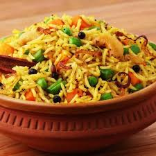

Paneer Butter Masala
A rich and creamy North Indian curry with paneer (Indian cottage cheese) cooked in a tomato, butter, and cashew-based gravy.
Ingredients
- 200g Paneer, cubed
- 2 large Onions, finely chopped
- 3 Tomatoes, puréed
- 1/2 cup Cashews, soaked
- 2 tbsp Butter
- 1 tbsp Ginger-Garlic paste
- Spices: Turmeric, Red Chili powder, Garam Masala
- Fresh Cream for garnish
Dal Makhani
A classic Punjabi dish made with whole black lentils (urad dal) and kidney beans (rajma) slow-cooked with butter and cream.
Ingredients
- 1 cup Whole Urad Dal
- 1/4 cup Rajma (Kidney Beans)
- 1/2 cup Tomato Purée
- 2 tbsp Butter/Ghee
- 1 tbsp Ginger-Garlic paste
- 1/2 cup Fresh Cream
- Spices: Cumin, Red Chili powder, Garam Masala
Masoor Dal Tadka
A simple yet flavorful lentil curry made from red lentils, tempered with aromatic spices.
Ingredients
- 1 cup Masoor Dal (Red Lentils)
- 1 Onion, chopped
- 2 Tomatoes, chopped
- 2-3 Garlic cloves, minced
- 1 Green Chili, slit
- 1 tsp Cumin Seeds
- 1/2 tsp Turmeric Powder
- Salt to taste
- Coriander leaves for garnish
Aloo Gobi
A popular dry Indian dish made with potatoes (aloo) and cauliflower (gobi) cooked with a blend of spices.
Ingredients
- 2 Potatoes, diced
- 1 small Cauliflower, florets
- 1 Onion, chopped
- 1 Tomato, chopped
- 1 tsp Ginger-Garlic paste
- Spices: Cumin seeds, Turmeric, Red Chili powder, Coriander powder, Garam Masala
- Oil for cooking
- Fresh coriander for garnish
Chole Bhature
A popular North Indian dish consisting of spicy chickpea curry (chole) and fried leavened bread (bhature).
Ingredients
- For Chole: 1 cup Chickpeas (Chana), soaked overnight
- 2 Onions, chopped
- 3 Tomatoes, puréed
- Ginger-Garlic paste
- Chole Masala, Turmeric, Red Chili powder
- For Bhature: All-purpose flour, Yogurt, Yeast, Sugar, Salt, Oil for frying

Vegetable Biryani
A fragrant and flavorful rice dish made with basmati rice, mixed vegetables, and aromatic spices, cooked in layers.
Ingredients
- 1 cup Basmati Rice
- Mixed vegetables (carrots, beans, peas, potatoes)
- 1 Onion, thinly sliced
- 1 Tomato, chopped
- Ginger-Garlic paste
- Biryani Masala, Turmeric, Red Chili powder
- Yogurt, Mint leaves, Coriander leaves
- Ghee/Oil